| 日付 | 2010年11月13日（土） |
|---|---|
| 山域 | 奥武蔵 |
| メンバー | 家族（妻） |
| 山行形態 | 日帰り |
| アクセス | 電車、バス |
| ルート (Map) | さわらびの湯→白谷沢→棒ノ折山→岩茸石山分岐→八桑→川井駅 |
冬に近づき晴天の日が増えてきた。今日も絶好の登山日和だ。
もうあまり高い山には登れないため、棒ノ折山に向かうことにする。
この山に行くのは4年ぶりのことだ。
9:03 さわらびの湯バス停到着。標高255m。
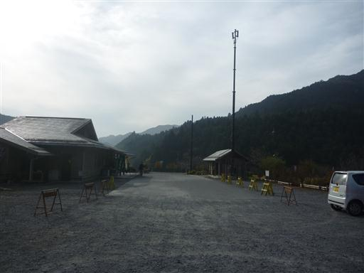
桜か梅かよく分からないが、気の早い花がもう咲いている。
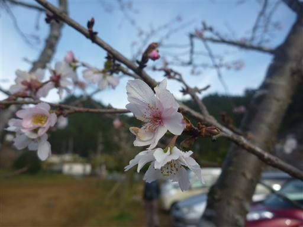
有馬ダム。観光客がちらほら来ている。
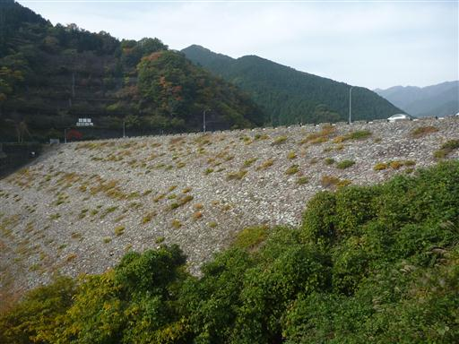
水面に映る紅葉。今年は紅葉を見に行くことができなかった。
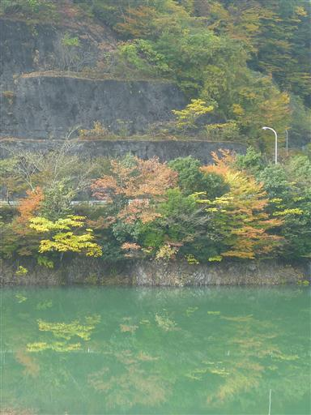
今日は風が無いのか水面は静かだ。
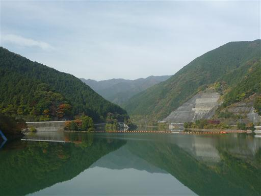
ダムのそばを通り過ぎて、登山道入口に到着する。
このあたりの風景は4年前と全く変わっていない。
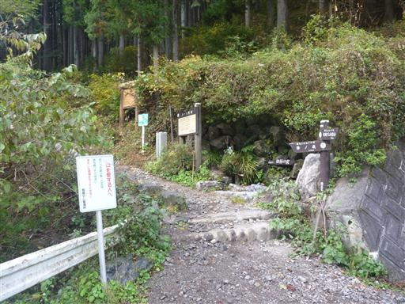
両側から岩壁が迫っている。何度見ても面白い地形だ。
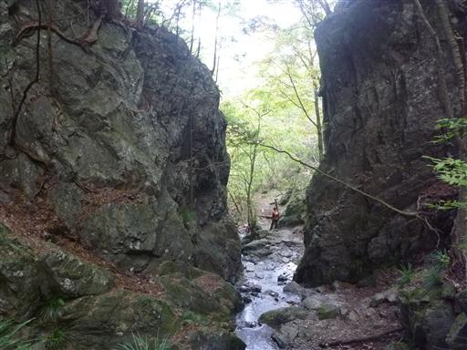
ここからは白矢沢を遡行するルート。美しい渓谷の道を登っていく。
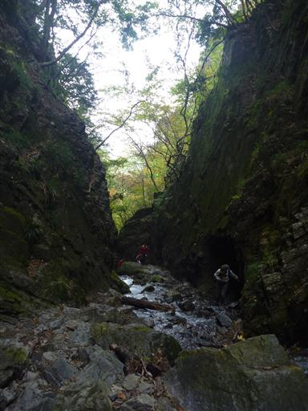
白孔雀の滝。
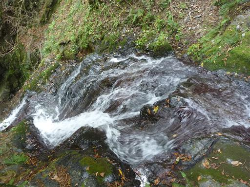
沢から離れるといったん林道と交差する。無粋な場所だが多くのハイカーが休憩している。
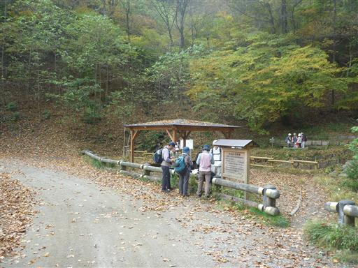
落ち葉が積もる道。このあたりも記憶に残っている。
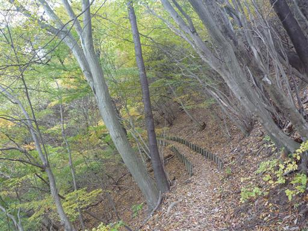
岩茸石に到着。石の上はそこそこ展望がある。
比較的簡単に登ることができる。
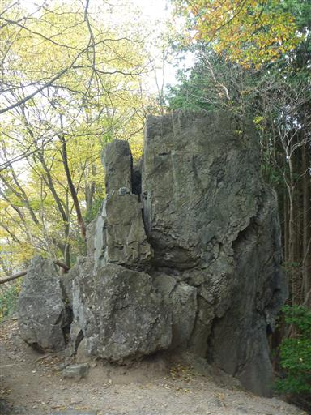
11:23 棒ノ折山山頂到着。標高969m。
山頂は明るく開けている。
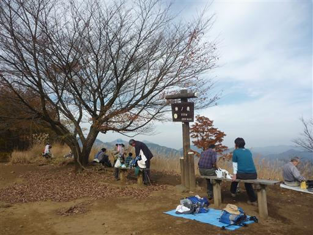
比較的展望の良い山なのだが、残念ながらこの山からの展望は地味でつまらない。
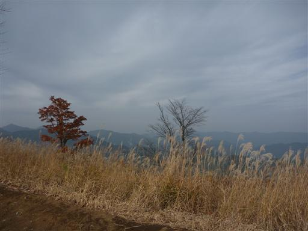
前回、棒ノ折山に来たときは名栗川橋方面に下りたが、
今回は奥多摩の岩茸石山方面に向かうことにする。このルートは一度歩いてみたかった。
最初のピーク・黒山を始め、名もない小さな瘤がたくさんあるルートだ。
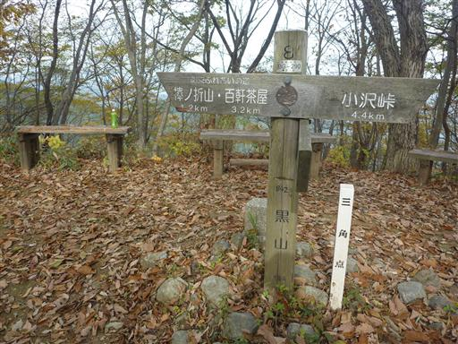
こちらの道は人が少なく気持ちの良いルートだ。風が吹くと雨のように落ち葉が降ってくる。
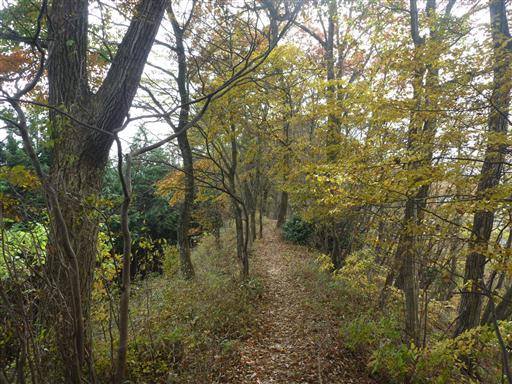
隣の尾根は稜線上だけ落葉樹林が残っている。
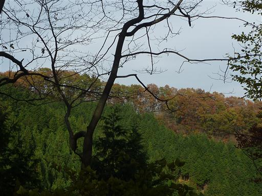
目の前に岩茸石山が見えてきた。あと5分ほどで山頂だが
疲れたとのことで、分岐点から下山することにする。
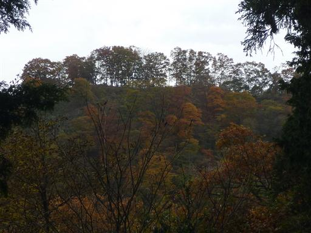
どうってことのない距離なのだが、つまらない展望の下山道は異様に長く感じる。
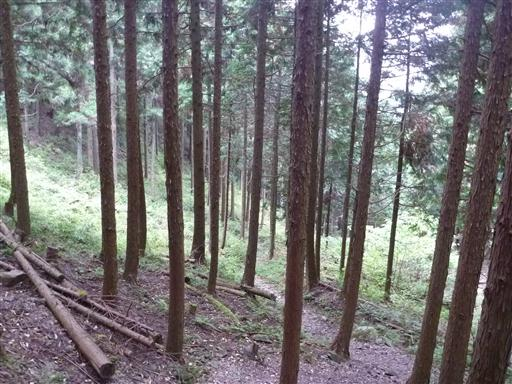
下山。ガードレールに変わったテントウムシが止まっている。
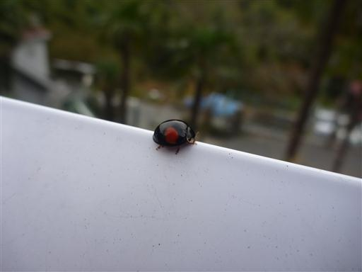
16:10 川井駅到着。標高265m。
4年ぶりの棒ノ折山だったが、白矢沢ルートはやはり美しい道だった。
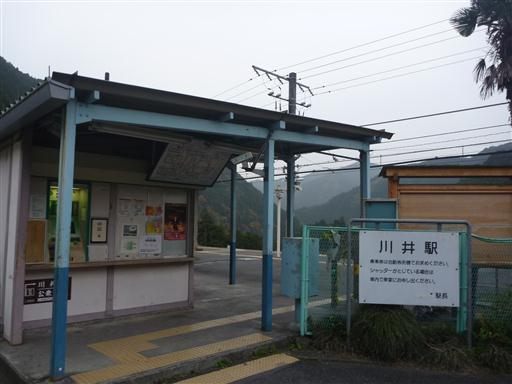